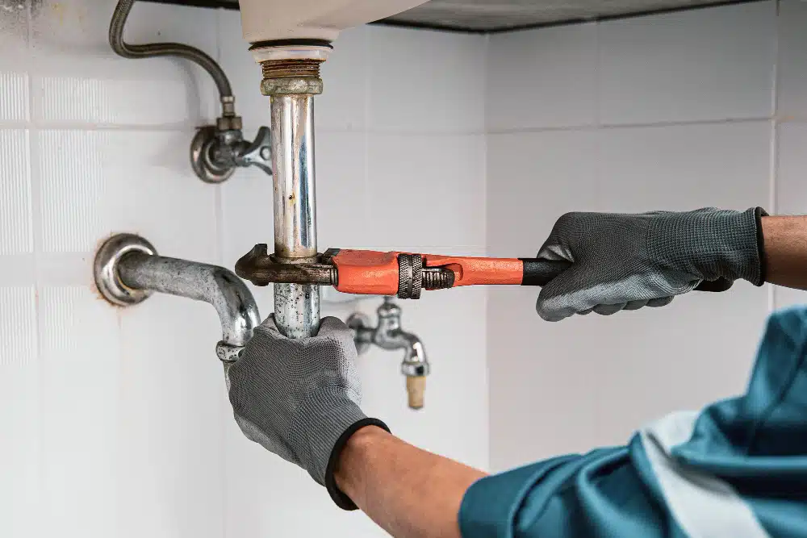

Nem kell tudnod, mi a baj.
Elég, ha elmondod, mit látsz.
Hívj fel, és mondd el, mit tapasztalsz. Ha telefonon megoldható tanáccsal, megmondom. Ha ki kell menni, megbeszéljük — felesleges körök nélkül.
Közvetlen szám: +36 70 123 4567
~50 év tapasztalat
358 vélemény · 4,9 átlag
XI. kerület + 30 km

Ma is elérhető
János, vízszerelő
★★★★★
4,9 · 358 vélemény